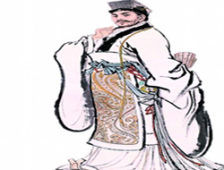

| 历史人物导航 |
| 诗词家 |
| 天文家 |
| 军事家 |
| 作家 |
| 革命家 |
●“赋圣”“辞宗”——司马相如：南充蓬安人，入选第二批四川历史名人，西汉文学家，被后世誉为“辞宗”“赋圣”。其与卓文君的爱情故事成为千古佳话。
●《三国志》作者——陈寿：南充人，入选第二批四川历史名人，撰写的纪传体史学巨著《三国志》，奠定了南充是三国文化之源的历史地位。
●恒定春节的天文学家——落下闳: 南充阆中人，入选首批四川历史名人，是首位在历法上确定“春节”的天文学家，被称为“年爷爷”。国际永久编号为16757的小行星：被命名为“落下闳星”。
●开国元勋——朱德:南充仪陇人，伟大的马克思主义者，伟大的无产阶级革命家、政治家、军事家， 中国人民解放军主要缔造者之一，中华人民共和国开国元勋。
●为人民服务的光辉典范——张思德: 南充仪陇人，全心全意为人民服务的光辉典范。2009年9月10日，被评为“100位为新中国成立作出突出贡献的英雄模范人物”之一。
●民主革命家——张澜: 南充西充人，著名的民主革命家、教育家，中国民主同盟的创建者和领导者，曾任中央人民政府副主席、全国人大常委会副委员长、全国政协副主席。
